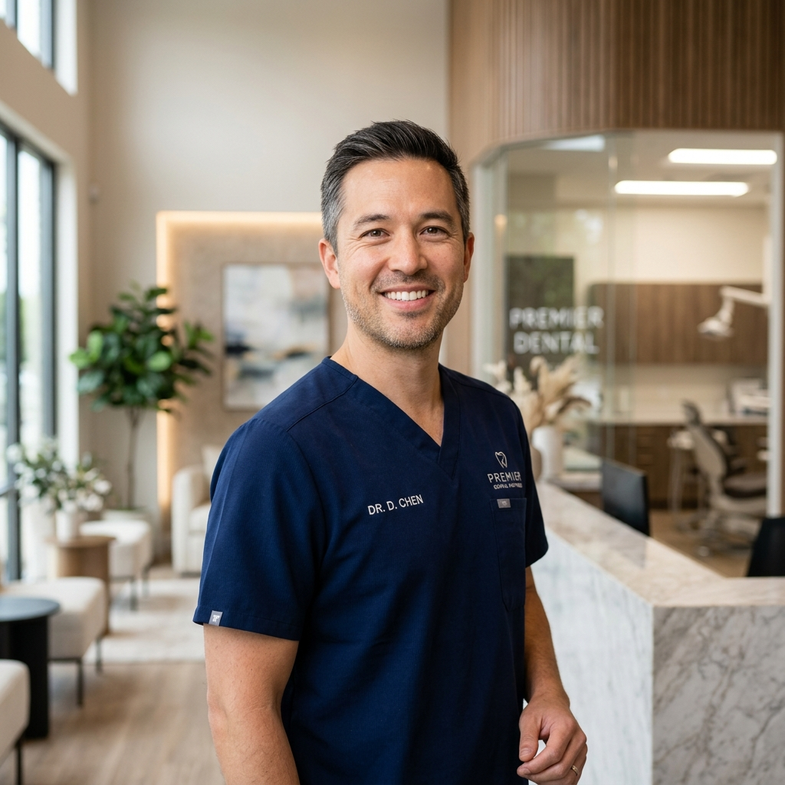
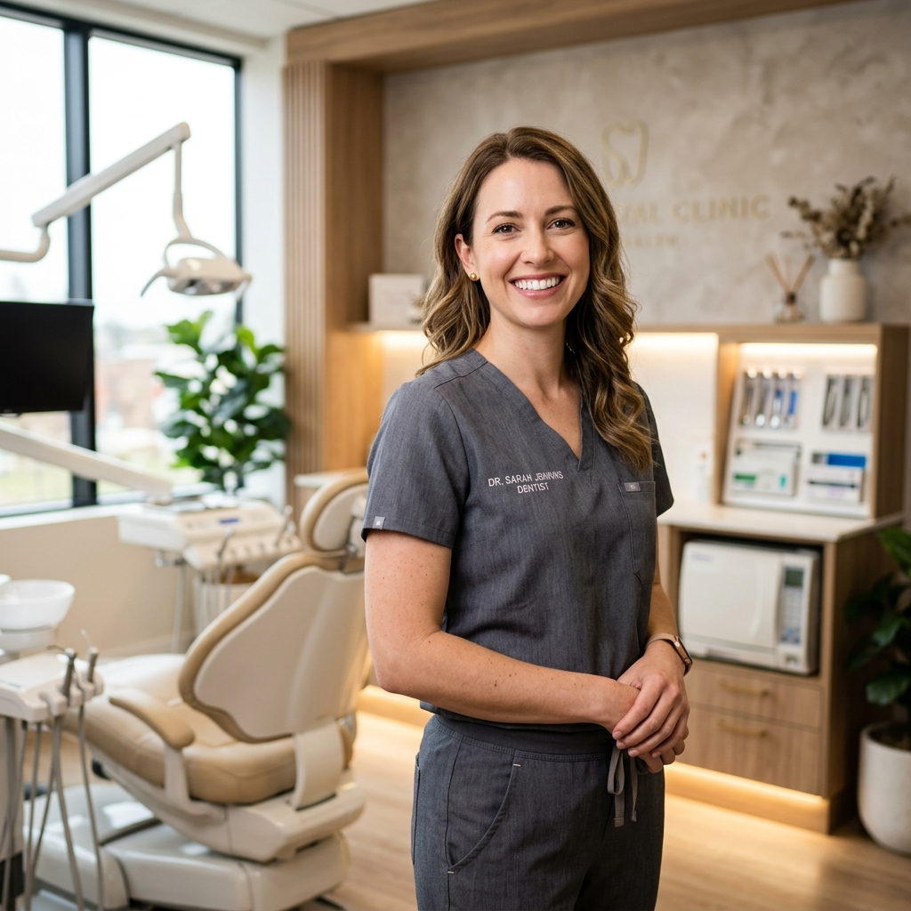

Dr. Adrian Vance
DDS, MSD, PhDDr. Adrian Vance has spent over 15 years pioneering micro-invasive dental implant methods and biological tooth reconstructive workflows. He guides the clinical research focus at Dentysta and lectures internationally on dental osseointegration.
"True dental care is about marrying structural integrity with biological harmony so patient health lasts for decades."
Academic & Board Credentials
- Doctor of Dental Surgery (DDS) — Columbia University College of Dental Medicine
- Master of Science in Dentistry (MSD) — University of Michigan (Periodontics & Implantology)
- Doctor of Philosophy (PhD) in Biomaterials — University of Zurich
- Fellowship — International Congress of Oral Implantologists (ICOI)
- Board Member — American Academy of Cosmetic Dentistry (AACD)

Dr. Evelyn Sterling
DDS, MSDr. Evelyn Sterling is an expert in digital orthodontics, aligner workflows, and interceptive pediatric orthodontics. She focuses on aligning teeth to restore natural masticatory forces and muscular facial balance.
"A balanced bite is as critical to clinical health as it is to an aesthetic smile profile."
Academic & Board Credentials
- Doctor of Dental Surgery (DDS) — Harvard School of Dental Medicine
- Master of Science (MS) in Orthodontics — University of California, San Francisco (UCSF)
- Certified Invisalign® Diamond Provider — Global Aligner Institute
- Active Member — American Association of Orthodontists (AAO)
- Active Board Member — World Federation of Orthodontists (WFO)

Dr. Marcus Vance
DDS, MDDr. Marcus Vance is a dual-degree oral surgeon specialized in guided bone grafting, sinus lifts, and immediate implant loading (All-on-4). He performs surgical interventions under high-resolution CBCT scanning templates.
"Surgical precision combined with warm patient empathy creates a completely safe clinical space."
Academic & Board Credentials
- Doctor of Dental Surgery (DDS) — University of Pennsylvania School of Dental Medicine
- Doctor of Medicine (MD) — Columbia University College of Physicians and Surgeons
- Oral & Maxillofacial Surgery Residency — NewYork-Presbyterian Hospital
- Diplomate — American Board of Oral and Maxillofacial Surgery (ABOMS)
- Fellow — American Association of Oral and Maxillofacial Surgeons (AAOMS)

Dr. Clara Hayes
DDSDr. Clara Hayes focuses on early-intervention clinical wellness, preventive dental hygiene, and sedation dental care. She is dedicated to building positive clinical experiences for pediatric patients.
"Nurturing healthy oral habits in a warm environment removes dental fear for a lifetime."
Academic & Board Credentials
- Doctor of Dental Surgery (DDS) — New York University (NYU) College of Dentistry
- Pediatric Dentistry Residency — Boston Children's Hospital
- Member — American Academy of Pediatric Dentistry (AAPD)
- Member — Indian Dental Association (IDA)
- Certified — Conscious Sedation & Life Support Protocols (PALS)